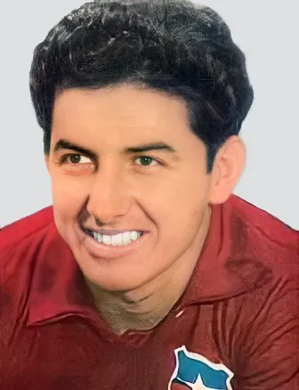

Photo source ↗Revista Argentina "Mundo Deportivo" · Public domain
The profile
Leonel Sánchez
Leonel Sánchez was born in Santiago and came through Universidad de Chile. A left-sided attacker, he was known for his powerful left foot and direct runs.
He spent most of his club career with Universidad de Chile, becoming a central figure in its successful side of the 1960s. He could deliver a cross, take a free kick or cut inside to shoot.
Sánchez scored four goals for host Chile at the 1962 World Cup, sharing the tournament's top-scoring total. His free-kick goal against the Soviet Union helped Chile reach the semi-finals, and the team went on to finish third.
1962Chile
Third place
Group B Chile3 : 1Switzerland
- Leonel SANCHEZ44′
- Jaime RAMIREZ51′
- Leonel SANCHEZ55′
- Rolf WUETHRICH6′
Chilehome
Starting lineup
- Misael ESCUTI
- Luis EYZAGUIRRE
- Raul SANCHEZ
- Sergio NAVARRO
- Carlos CONTRERAS
- Eladio ROJAS
- Jorge TORO
- Alberto FOUILLOUX
- Jaime RAMIREZ
- Honorino LANDA
- Leonel SANCHEZ
Substitutions
- No substitutions
Switzerlandaway
Starting lineup
- Charly ELSENER
- Fritz MORF
- Heinz SCHNEITER
- Ely TACCHELLA
- Andre GROBETY
- Hans WEBER
- Rolf WUETHRICH
- Toni ALLEMANN
- Kiki ANTENEN
- Norbert ESCHMANN
- Philippe POTTIER
Substitutions
- No substitutions
Group B Chile2 : 0Italy
- Jaime RAMIREZ73′
- Jorge TORO87′
Chilehome
Starting lineup
- Misael ESCUTI
- Luis EYZAGUIRRE
- Raul SANCHEZ
- Sergio NAVARRO
- Carlos CONTRERAS
- Eladio ROJAS
- Jorge TORO
- Alberto FOUILLOUX
- Jaime RAMIREZ
- Honorino LANDA
- Leonel SANCHEZ
Substitutions
- No substitutions
Italyaway
Starting lineup
- Carlo MATTREL
- Sandro SALVADORE
- Enzo ROBOTTI
- Mario DAVID
- Francesco JANICH
- Paride TUMBURUS
- Giorgio FERRINI
- Bruno MORA
- Humberto MASCHIO
- Jose ALTAFINI
- Giampaolo MENICHELLI
Substitutions
- No substitutions
Group B West Germany2 : 0Chile
- Horst SZYMANIAK21′ · pen.
- Uwe SEELER82′
West Germanyhome
Starting lineup
- Wolfgang FAHRIAN
- Herbert ERHARDT
- Karl-Heinz SCHNELLINGER
- Willi SCHULZ
- Hans NOWAK
- Horst SZYMANIAK
- Albert BRUELLS
- Willy GIESEMANN
- Uwe SEELER
- Hans SCHAEFER
- Engelbert KRAUS
Substitutions
- No substitutions
Chileaway
Starting lineup
- Misael ESCUTI
- Luis EYZAGUIRRE
- Raul SANCHEZ
- Sergio NAVARRO
- Carlos CONTRERAS
- Eladio ROJAS
- Jaime RAMIREZ
- Honorino LANDA
- Leonel SANCHEZ
- Mario MORENO
- Armando TOBAR
Substitutions
- No substitutions
Quarter-final Chile2 : 1Soviet Union
- Leonel SANCHEZ11′
- Eladio ROJAS29′
- Igor CHISLENKO26′
Chilehome
Starting lineup
- Misael ESCUTI
- Luis EYZAGUIRRE
- Raul SANCHEZ
- Sergio NAVARRO
- Carlos CONTRERAS
- Eladio ROJAS
- Jorge TORO
- Jaime RAMIREZ
- Honorino LANDA
- Leonel SANCHEZ
- Armando TOBAR
Substitutions
- No substitutions
Soviet Unionaway
Starting lineup
- Lev YASHIN
- Georgi CHOKHELI
- Leonid OSTROVSKI
- Anatoli MASLYONKIN
- Igor NETTO
- Valeri VORONIN
- Valentin IVANOV
- Aleksei MAMYKIN
- Mikhail MESKHI
- Viktor PONEDELNIK
- Igor CHISLENKO
Substitutions
- No substitutions
Semi-final Brazil4 : 2Chile
- GARRINCHA9′
- GARRINCHA32′
- VAVA47′
- VAVA78′
- Jorge TORO42′
- Leonel SANCHEZ61′ · pen.
Brazilhome
Starting lineup
- GILMAR
- DJALMA SANTOS
- MAURO RAMOS
- ZOZIMO
- NILTON SANTOS
- ZITO
- DIDI
- GARRINCHA
- VAVA
- AMARILDO
- Mario ZAGALLO
Substitutions
- No substitutions
Chileaway
Starting lineup
- Misael ESCUTI
- Luis EYZAGUIRRE
- Raul SANCHEZ
- Carlos CONTRERAS
- Manuel RODRIGUEZ
- Eladio ROJAS
- Jorge TORO
- Jaime RAMIREZ
- Honorino LANDA
- Leonel SANCHEZ
- Armando TOBAR
Substitutions
- No substitutions
Third-place match Chile1 : 0Yugoslavia
- Eladio ROJAS90′
Chilehome
Starting lineup
- Adan GODOY
- Luis EYZAGUIRRE
- Raul SANCHEZ
- Manuel RODRIGUEZ
- Humberto CRUZ
- Eladio ROJAS
- Jorge TORO
- Jaime RAMIREZ
- Leonel SANCHEZ
- Carlos CAMPOS
- Armando TOBAR
Substitutions
- No substitutions
Yugoslaviaaway
Starting lineup
- Milutin SOSKIC
- Vladimir DURKOVIC
- Vlatko MARKOVIC
- Slavko SVINJAREVIC
- Petar RADAKOVIC
- Vladica POPOVIC
- Dragoslav SEKULARAC
- Drazen JERKOVIC
- Milan GALIC
- Josip SKOBLAR
- Vladimir KOVACEVIC
Substitutions
- No substitutions
1966England
Group stage
Group D Italy2 : 0Chile
- Sandro MAZZOLA8′
- Paolo BARISON88′
Italyhome
Starting lineup
- Enrico ALBERTOSI
- Tarcisio BURGNICH
- Giacinto FACCHETTI
- Roberto ROSATO
- Sandro SALVADORE
- Giacomo BULGARELLI
- Giovanni LODETTI
- Sandro MAZZOLA
- Gianni RIVERA
- Paolo BARISON
- Marino PERANI
Substitutions
- No substitutions
Chileaway
Starting lineup
- Juan OLIVARES
- Luis EYZAGUIRRE
- Elias FIGUEROA
- Hugo VILLANUEVA
- Humberto CRUZ
- Alberto FOUILLOUX
- Ruben MARCOS
- Ignacio PRIETO
- Leonel SANCHEZ
- Pedro ARAYA
- Armando TOBAR
Substitutions
- No substitutions
Group D Chile1 : 1North Korea
- Ruben MARCOS26′ · pen.
- PAK Seung Zin88′
Chilehome
Starting lineup
- Juan OLIVARES
- Elias FIGUEROA
- Alberto VALENTINI
- Hugo VILLANUEVA
- Humberto CRUZ
- Alberto FOUILLOUX
- Ruben MARCOS
- Ignacio PRIETO
- Leonel SANCHEZ
- Pedro ARAYA
- Honorino LANDA
Substitutions
- No substitutions
North Koreaaway
Starting lineup
- LEE Chang Myung
- PAK Li Sup
- SHIN Yung Kyoo
- LIM Zoong Sun
- LI Dong Woon
- IM Seung Hwi
- PAK Doo Ik
- HAN Bong Zin
- OH Yoon Kyung
- PAK Seung Zin
- KIM Seung Il
Substitutions
- No substitutions
Group D Soviet Union2 : 1Chile
- Valeriy PORKUYAN28′
- Valeriy PORKUYAN85′
- Ruben MARCOS32′
Soviet Unionhome
Starting lineup
- Anzor KAVAZASHVILI
- Leonid OSTROVSKI
- Valentin AFONIN
- Albert SHESTERNYOV
- Viktor GETMANOV
- Alexey KORNEEV
- Valeri VORONIN
- Viktor SEREBRYANIKOV
- Slava METREVELI
- Valeriy PORKUYAN
- Eduard MARKAROV
Substitutions
- No substitutions
Chileaway
Starting lineup
- Juan OLIVARES
- Elias FIGUEROA
- Alberto VALENTINI
- Hugo VILLANUEVA
- Humberto CRUZ
- Ruben MARCOS
- Ignacio PRIETO
- Leonel SANCHEZ
- Pedro ARAYA
- Honorino LANDA
- Guillermo YAVAR
Substitutions
- No substitutions